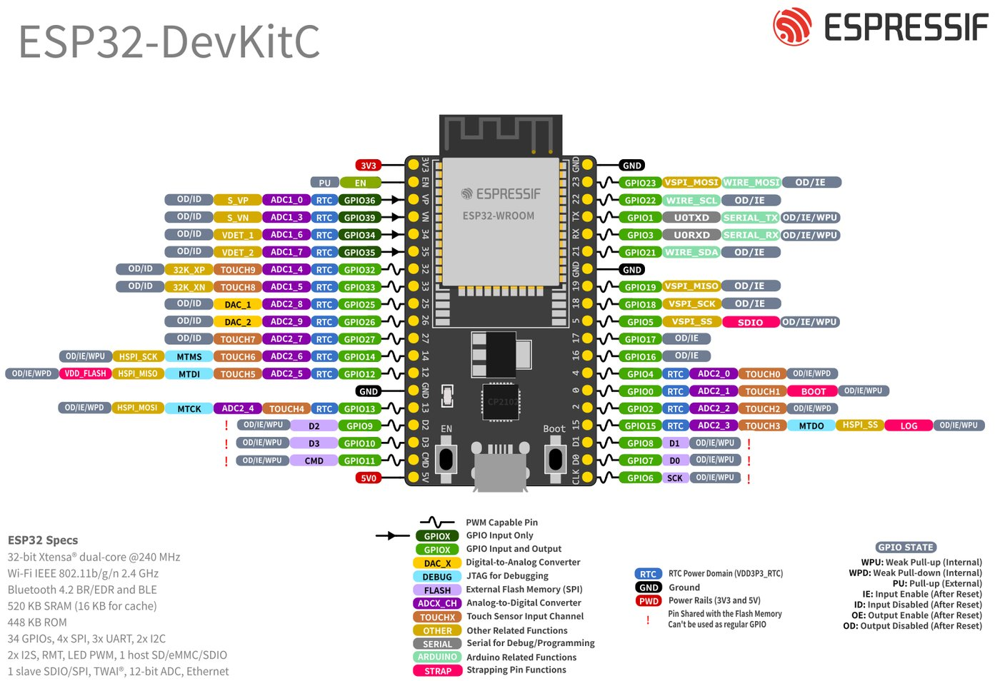

نقشه پایههای تعاملی ESP32 DevKitC
هر وقت خواستی قطعهای وصل کنی، اول اینجا بیا. روی هر پایه کلیک کن تا ببینی چه کاری از آن برمیآید و چه خطری دارد. با دکمههای بالای نقشه، پایههای همخانواده (مثلا همه پایههای ADC یا لمسی) را جدا کن. توضیح کامل هر دسته در درس ۱.۳ است.
قانون چراغ راهنمایی
| رنگ | پایهها | یعنی |
|---|---|---|
| 🟢 امن | 4, 13, 16, 17, 18, 19, 21, 22, 23, 25, 26, 27, 32, 33 | برای ورودی و خروجی بدون نگرانی استفاده کن. |
| 🟡 با احتیاط | 0, 2, 5, 12, 14, 15 · 34, 35, 36, 39 (فقط ورودی) · 1, 3 (USB) | Strapping هستند، هنگام بوت سیگنال میدهند، فقط ورودیاند یا Serial از آنها استفاده میکند. |
| 🔴 ممنوع | 6, 7, 8, 9, 10, 11 | به حافظه فلش داخلی وصلاند. استفاده از آنها برد را هنگ میکند. |
نقشه رسمی Espressif

برد تو ۳۰ پایه دارد؟
برد رایج «ESP32 DOIT DevKit V1» فقط ۳۰ پایه دارد: پایههای فلش (6 تا 11)، GPIO0 (فقط از طریق دکمه BOOT در دسترس است) و یک GND را روی لبه ندارد و ترتیب پایههایش با این نقشه فرق میکند. ولی شماره GPIO همان است؛ پس همیشه به شماره GPIO نگاه کن، نه به محل فیزیکی. روی برخی بردها «D2» چاپ شده که یعنی GPIO2.
بردهای دیگر